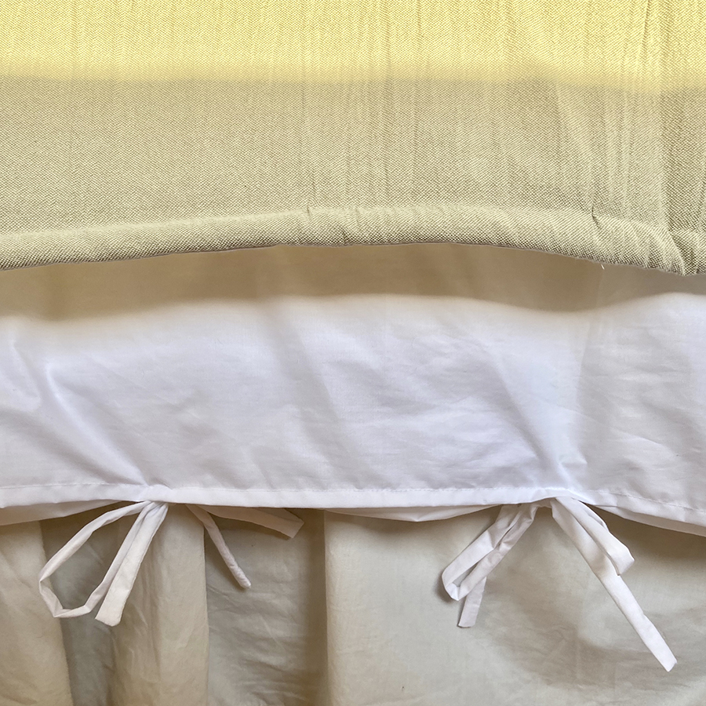
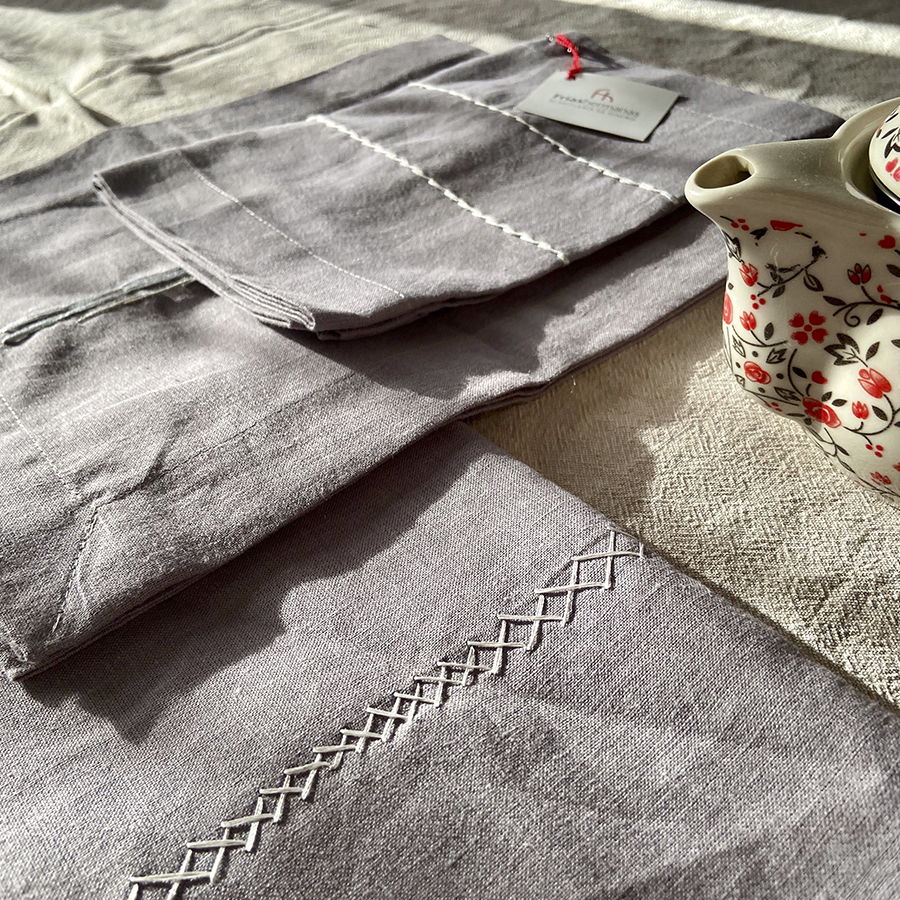
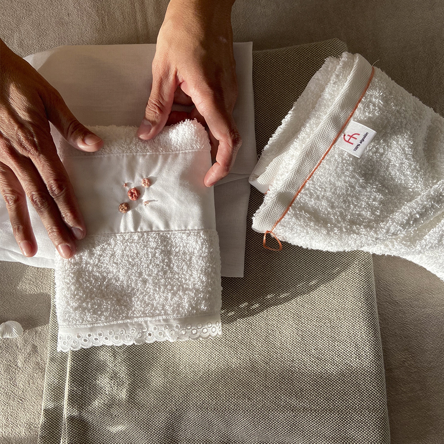
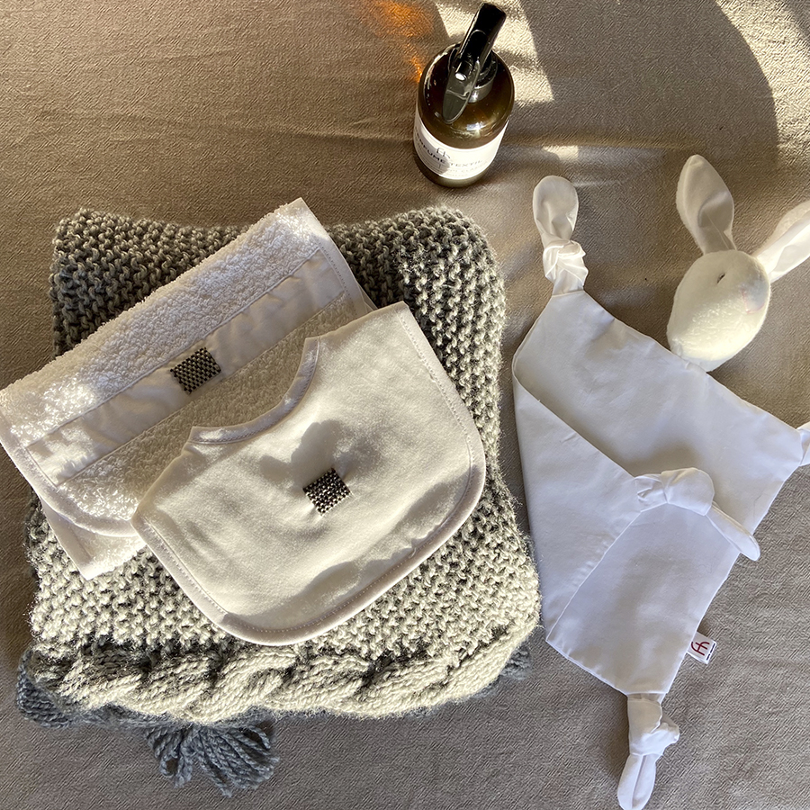

¡Disfrutalas!
| Línea |
Descripción |
Productos |
| Cama |
Nuestras sabanas están realizadas en puro genero de algodón,
con la filosofía de que el blanco en el color, invita al
descanso y al placer del sueño. el toque de color lo
realizamos a través de una guarda bordada con hilos
franceses puramente a mano. los diseños son exclusivos y
personalizados, tanto en sus medidas, genero, y diseño en su
bordado.
|

|
| Mesa |
Manteles, caminos de mesa, set de cocina y detalles de buen
gusto para mimar a las cheff de nuestro hogar. Los géneros
mas usados en FH son: linos italianos, bull y para la linea
institucional: telas inífugas y mezcla para una mejor
función.
|

|
| Baño |
Nuestras toallas de puro algodón (480grs), nos hacen sentir
que estamos en un spa; por su absorción y generosas medidas.
Nuestras batas; con corte de sastrería, costuras reforzadas
y terminación francesa son el producto fuerte para mimarse o
mimar a la hora de regalar exclusividad y calidad, con el
detalle de personalizar con la inicial bordada al agasajado.
|

|
| Bebé |
Cuidamos la pielcita de los bebés con algodón hipoalergénico
en nuestros productos,Unas buenas sábanas que permiten
respirar la piel es el primer paso para enseñarles y
acompañar sus sueños.
|

|